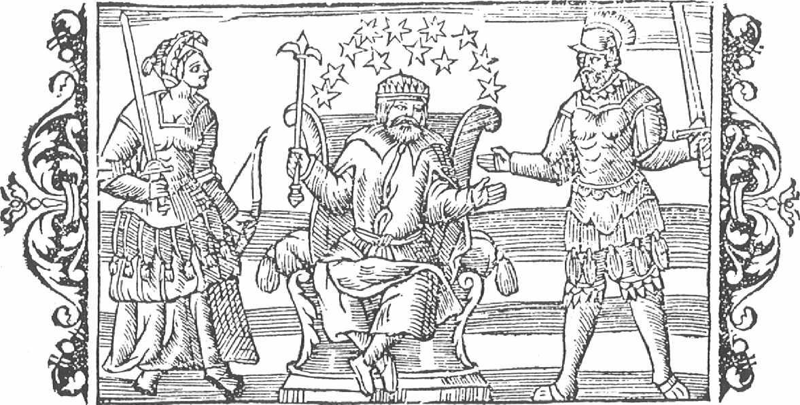

İskandinav mitlerinde iki tanrı topluluğu vardır: Aesir (tekili Áss) ve Vanir (tekili Vanr). Snorri'nin Ortaçağ 'bilge' etimolojisinin tipik bir örneğini teşkil eden iddiasının aksine, Áss sözcüğü Asya sözcüğünden türetilmiş değildir. Áss sözcüğü, 'tanrı' anlamına gelen Germence bir sözcükten türetilmiştir. Bu sözcük, Eski İngilizcedeki õs sözcüğü (bu sözcük, ancak Oswald, Osbert gibi eril kişi adlarının ilk harfi olarak vardığını sürdürebilmiştir) ile birtakım benzerlikler sergilemektedir ve sözcüğün Gotik çoğul hali Latince bir metinde asnis olarak ve 'yarı tanrılar' anlamına gelen semideos şeklinde tercüme edilmiş haliyle geçmektedir. Vanr ise daha sorunlu bir sözcüktür. Sözlüklerde de belirtildiği üzere, "bu sözcük için etimoloji sıkıntısı çekilmemektedir," ama onu Eski İskandinav dillerinde 'dost' anlamına gelen vinr ve Latincede 'aşk tanrıçası' anlamına gelen Venüs sözcükleriyle ilişkilendiren bir yorum oldukça dikkat çekicidir.
Karşılaştırmalı dinler uzmanı olan dünyaca ünlü Fransız bilgin Georges Dumézil, Aesir ve Vanir arasında yapılagelen ayrımın köklerinin çok eski tarihlere dayandığını ve Hint-Avrupa kökenli diğer halkların dinlerinde de bu ayrımın bulunduğunu öne sürmüştür.[S.47] Dumézil'e göre, Vanir, yaşanan bir savaşın ardından daha üst mevkiye gelmiş olan aşağı mevkilere ait tanrılardır. İki tanrılar topluluğu arasında yaşanan bu mücadele, Heimskringla'da komşu halklar arasında yaşanan bir savaş olarak anlatılır:
Odin, Vanir'le savaşmak için bir ordu kurdu. İki taraf da vatanını kahramanca savundu ve sırayla zafer kazandı. Birbirlerine ağır kayıplar verdirdiler. Birbirlerinin topraklarını yağmaladılar. Ve her iki halk da bitmek tükenmek bilmeyen bu savaştan usandığında, barış yapmak için bir araya geldiler; ateşkes imzalayıp birbirlerine rehineler verdiler. Vanir, en gözde adamları olan Niord ve oğlu Freyr'i rehin verdiler. Buna karşılık Aesir, verilen her türlü devlet işinin altından kalkabileceğini söyleyerek Hoenir denen adamı onlara teslim ettiler; yanına da yardımcısı niyetine çok akil bir adam olan Mimir'i verdiler. Vanir ise bu davranışa karşılık olarak, ülkelerindeki en zeki adamı onlara verdiler. Bu adamın adı Kvasir idi.
Hoenir Vanaland'a gittiğinde ona derhal bazı yetkiler verildi. Mimir, ona hangi durumda nasıl konuşması ve ne söylemesi gerektiğini öğretti. Böylece Hoenir, yanında Mimir olmadan katıldığı mahkemelerde ya da toplantılarda, karşısına getirilen bütün zor davalarda hep aynı yanıtı verdi ve "bırakalım başkası karar versin" dedi. Derken Vanir, Aesir'in rehine takası sırasında kendilerine bir oyun etmiş olabileceklerinden kuşkulanmaya başladılar. Mimir'i yakalayıp kellesini kestiler ve Aesir'e geri gönderdiler. Odin, Mimir'in kellesini teslim aldı ve çürümesin diye üzerine baharatlar sürüp, söylediği ilahilerle kesik başa büyü yaptı. Bu işlem, Mimir'in kesik başına konuşabilme ve Odin'e pek çok karanlık sırrı anlatabilme gücü verdi.
Odin, Niord ve Freyr'i kurban törenlerini yönetecek rahipler olarak görevlendirdi. Böylece onlar birer tarikat lideri haline geldiler. Niord'un kızının adı Freyia idi. O da kurban törenlerini yöneten bir rahibeydi ve Aesir'e Vanir arasında yaygın olan Seiðr (büyü) yapmayı ilk öğreten de o oldu. Niord, Vanir arasında yaşarken öz kız kardeşi ile birlikte olmuştu.[S.48] Bu davranış, Vanir arasında meşru idi ama Aesir arasında yakın akrabaların birlikte olmaları kesinlikle yasaktı.
Bu efsanede anlatılan olayların çoğu, Edda şiirlerindeki anıştırmalar yoluyla da doğrulanmaktadır. Vafþrúðinismál şiirinde şöyle bir soru sorulur: "Niord, Aesir'in oğullarının arasına nereden geldi? Yüzlerce tapınağı ve türbeyi yönetmesine rağmen, Aesir'den değildir". Bu sorunun yanıtı ise, yine aynı şiirde "Bilge güçler onu Vanir topraklarında yarattılar ve tanrılara rehin verdiler. Dünyanın sonu geldiğinde, bilge Vanir arasında yaşamak için geri dönecek" şeklinde dile getirilmektedir.
Tanrılar arasında ayyuka çıkmış en büyük rezaletlerden birini görmek istiyorsak, Loki ve hasımları arasında yaşanan atışmanın nasıl utanç verici eylemelere ve davranışlara dönüştüğünü anlatan Lokasenna şiirine başvurmamız gerekmektedir. Niord, oğlunun herkes tarafından sevilmesi ve tanrılar arasında bir prens olarak görülmesiyle övündüğü sırada, Loki ona şu sözlerle sataşır:
Kes artık şunu Niord, dizginle biraz kendini.
Saklayamayacağım yaptığın rezilliği,
Övündüğün oğlunu kendi kız kardeşinden peydahladığını.
Gerçi senden beklenmeyecek bir şey değil bu.
Freyia araya girmeye çalıştığında, Loki ona da çatar:
Senin ciğerini bilirim ben Freyia, kapa çeneni
Sen de sütten çıkmış ak kaşık değilsin hani.
Bu saraydaki Aesir'in ve Elflerin hepsi
Girmiştir senin koynuna.
Loki, verdiği bir sonraki karşılıkta ise, Freyia'yı erkek kardeşiyle birlikte olmakla suçlar.[S.49]
Bu dizelerde, Vanir tanrılarının -tekinsiz ya da en azından alışılmışın dışında olmaları anlamında- nevi şahsına münhasır simalar oldukları onaylanmaktadır. Sözgelimi, seiðr yapmak yararlı olduğu kadar, tehlikelidir de; zira yapanlara başkalarına zarar verebilme ya da ezoterik bilgilere ulaşabilme gücü veren bir büyü biçimidir. Snorri, Odin'in bunu bildiğini ve ona bunun muhtemelen Freyia tarafından öğretilmiş olduğunu söyler:
Odin, büyük bir kudreti de beraberinde getiren seiðr yapabilme becerisine sahipmiş; gerçekten de onu bizzat uygulamış. Bu gücü kullanarak insanların yazgılarını ve istikbalde meydana gelecek olayları bilebilirdi. İnsanoğlunun başına ölümü, kör talihi ya da hastalıkları musallat edebilir ya da bir kimsenin gücünü ve zekâsını, bir başkasına aktarabilirdi. Ama elbette bu gücün de bir bedeli vardı: Büyüyü yapan kişiye, bir erkek için son derece utanç verici bir şey olduğuna inanılan bir kadınsılık da kazandırmaktaydı. Bu yüzden, nasıl büyü yapılacağı yalnızca rahibelere öğretilirdi.
Bununla birlikte, Vanir tanrılarının, insanoğluna genellikle hayrı dokunmaktaydı. Dumézil onları 'sağlık, gençlik, doğurganlık ve mutluluk' tanrıları olarak görür. Ayrıca, ikiz tanrılardan söz eder. Sözünü ettiği bu (karı koca) ikizler muhtemelen Freyr ile Freyia'dır. Niord'un da bir kız kardeşi (ve karısı) olması gerekir ve onun izi de biraz güç olsa da İskandinav mitlerinde bulunabilir. 1. yüzyılda yaşamış olan Romalı tarihçi Tacitus, Kuzey Denizi'ne komşu Germen kabileleri tarafından tapınılan bir tanrıçanın varlığından söz etmiş ve kendisinin 'Toprak Ana' olarak yorumladığı bu tanrıçaya (Niord adıyla tamamen kökteş bir sözcük olan) Nerthus dendiğini bildirmiştir. Bu tanrıça, takipçilerine huzur ve bereket ihsan etmekteydi. Niord, İskandinav kaynaklarda, zenginlik, bereket, ticaret ve balıkçılık tanrısı olarak geçer. Freyr ise elverişli hava koşullarının müsebbibidir; dolayısıyla, üretim, huzur ve refah tanrısıdır. İnsanlar, büyük Uppsala tapınağında bulunan ve Freyr'i tasvir ettiğine inanılan bir erkek heykeline,[S.50] kendilerine be reketli bir evlilik nasip etsin diye adaklar adayıp yalvarırlarmış. Freyia ise "aşk şarkılarına bayılır. Gönül meselelerinde ona dua etmek hayırlara vesile olur".
Ralling'den, Freyr'in verimliliğini tasvir ettiği muhtemel olan fallik bir figür.
Bu gibi temaların Ortaçağ günlük hayatında çok önemli bir yere sahip olmasından ötürü, aslında Vanir tanrıları hakkında elimizde pek çok mit olması gerekir. Ama şaşırtıcı biçimde, bu tanrılar hakkındaki mitlerin ancak pek azı günümüze dek varlığını koruyabilmiştir.[S.51] Bunların bazıları da yalnızca dolaylı olarak değinmelerden ibarettir. Sözgelimi, Freyia çok az bilinen bir tanrı olan Od ile evliymiş. Od, her yolculuğa çıktığında, tanrıça onun ardından ağlarmış. Freyia kocasını aramak için yollara düşer ve bu yolculukları sırasında farklı ve tuhaf takma adlar kullanırmış. Bu yüzden, Freyia'nın maceralarını anlatan muhtemelen pek çok mit vardır. Fakat bu mitlerden geriye kalanlar, yalnızca Snorri'nin ve diğer şairlerin anıştırmalarından oluşmaktadır. Freyia, kocası için gözyaşı döktüğünde, dökülen bu gözyaşları altına dönüşürmüş. Bu yüzden, altına göndermede bulunmak amacıyla, 'Freyia'nın gözyaşı' ya da 'Freyia'nın eriyen gözkapağı' gibi bir dizi eğretileme geliştirilmiştir.
Kayıtlarda yer alan en ayrıntılı Vanir miti, Freyr'in dişi bir dev olan Gerd'e duyduğu tutkuyu anlatan bir aşk öyküsüdür. Şehvet ve bereket tanrısına yaraşır nitelikteki bu öykü, bir Edda şiiri olan ve 'Skirnir'in Yolculuğu' anlamında gelen For Skírnís'te anlatılır. Snorri, Nesir Edda''da bu öyküyü yorumlamıştır. Odin'in, Hlidskialf denen ve üzerinden dünyanın her yerini görebildiği görkemli bir tahtı vardır. Bir gün Freyr bu tahta çıkma cüretini gösterir ve daha sonra bu küstahlığından ötürü cezalandırılır. Tahta çıktığında kuzeye doğru bakmış (ve okul çağına gelmiş her çocuk bilir ki, kuzeyde devler yaşar) ve orada parlak kolları olan güzeller güzeli bir kız görmüştür. Görür görmez kıza vurulan Freyr, kara sevdadan yataklara düşer. Oğlunun halini hiç beğenmeyen Niord, Freyr'in uşağı olan Skirnir'i bu durumun sebebini araştırması için görevlendirir. Skirnir, Freyr'e niçin bu kadar kederli olduğunu sorar ve çocukluk arkadaşı olmalarının hatırına, sırrını anlatması için ona yalvarır. Freyr, dostunun ısrarı karşısında daha fazla dayanamaz ve aşkını itiraf eder. Skirnir'e o kızı bulup kendisine getirmesi için yalvarır. Skirnir, yolculuğun çok çetin geçeceğinin farkındadır. Bu yüzden, Freyr'in muhteşem atını ve en büyük hazinelerinden biri olan, kendi başına dövüşebilen kılıcını ödünç alır.[S.52] Böylece, Skirnir yola koyulur ve sonunda, sürekli uluyan bekçi köpeklerinin etrafında nöbet tuttuğu, devlerin mekânına varır. Dışarıda oturmakta olan bir çoban, ona içeriye girmemesini öğütler. Skirnir çobanı dinleyip mekâna girmekten vazgeçtiği sırada çıkagelen Gerd, kuzeyli konukseverliğine yakışır şekilde, onu bir içki alması için içeri davet eder ve ona ziyaret sebebini sorar. Skirnir, olan biteni Gerd'e anlatır ve Freyr'in aşkına karşılık vermesi için ona Vanir tanrılarının muazzam bir servete sahip olduklarının açık kanıtı olan şu hediyeleri takdim eder: on bir altın elma ve her dokuz gecede bir kendisini çoğaltan bir yüzük. Fakat Gerd, yeterince altını olduğu gerekçesiyle bu teklifi reddeder. Skirnir, bunun üzerine, Gerd razı olana dek gitgide çirkinleşen (ve gizemli hale gelen) tehditler savurur. Gerd sonunda pes eder ve Freyr'e varacağını söyleyip dokuz gün süre ister. Bunun üzerine, Skirnir eve döner. Freyr dışarıda neler olup bittiğini duymaya can atmaktadır. Skirnir ona Gerd'in mesajını ilettiğinde Freyr, her gerçek aşığı kalbinden vurabilecek olan şu sözleri söyler:
Uzundur bir gece. İki gece ise daha uzun;
Nasıl dayanayım ben üç geceye?
Bir ay bile daha çabuk geçip giderdi önceden,
Böylesi bir evlilik arifesinden.
Kimi karanlık noktaları olmakla birlikte, For Skírnís aslında en anlaşılır İskandinav mitlerinden birini anlatmaktadır. Gerd sözcüğü, Eski İskandinav dilinde 'etrafı çevrili arsa, tarla' anlamına gelen bir cins isim olan gardr ile bağlantılıdır (çağdaş lehçe ve özgül İngilizcedeki 'grath' sözcüğünde olduğu gibi). Dolayısıyla, Freyr ile Gerd'in birlikteliği, bereket tanrısıyla ekili toprakların yaptığı kutsal evliliğin bir anlatımı olarak görülebilir. Sonuçta, For Skírnís şiiri mutlu sonla biter. Ama bu birlikteliğin ilerde ne gibi vahim sonuçlar doğuracağına, yine Lokasenna''da yer alan bir dörtlükte Loki tarafından alaycı bir dille işaret edilmektedir:[S.53]
Gymir'in kızını [Gerd'i] alabilmek için, altınlar döktün yollarına,
Kılıcını feda ettin bu uğurda.
Ama Muspell'in oğulları Mirkwood'u geçtiklerinde,
Sen be hey zavallı; bilemeyeceksin neyle savaşacağını.
Muspell'in oğulları, dünyanın sonu geldiğinde tanrılara saldıracak ve onları yok edecek olan ordunun bir parçasını oluşturacaklardır. Freyr, bu savaşta tanrıları korumak için çarpışacaktır; ama bir anlık tutkusu uğruna feda ettiği harikulade kılıcı olmaksızın bunu nasıl yapabilir ki?
Bu öykü, Snorri'nin Heimskringla'sında yer almaktadır ve bu yüzden, Freyr'i sanki bir tanrı değilmiş de eski bir kralmış gibi ele alır. Yazarın İskandinav tanrılarına yönelik euhemerci* tutumunun bir başka yönü de budur. Bu tutum öyküyü etkilemektedir. Niord ile Freyr, İsveç'in halef-selef kralları olarak tanımlanırlar. Snorri'ye göre, Freyr oldukça sevilen bir kraldı; onun krallığı sırasında hasatlar bereketliydi ve ülkede İsveçlilerin sebebini krallarından bildikleri uzun süreli bir barış hali egemendi. Freyr, topladığı vergiler ve haraçlarla, Uppsala'daki büyük tapınağı yaptırdı.
* Euhemerizm: Mitlerin gelenek kaynaklı olduğu ve anlatılanların gerçek olaylar ile kişiler üzerine kurulu olduğunu ileri süren düşünce. (ed.)
Freyr hastalanıp yatağa düştü. Hastalığı ilerleyince, adamları nasıl bir yol izleyeceklerini uzun uzun düşündüler. Birkaç kişi dışında, kimsenin onun yanına yaklaşmasına izin vermediler ve bu arada üç penceresi ile tek kapısı olan bir höyük inşa ettiler. Freyr öldüğünde, naaşını gizlice bu höyüğe taşıdılar ve İsveçlilere onun hâlen sağ olduğunu söylediler. Onun cesedini üç yıl boyunca orada tuttular. Toplanan tüm vergi paralarını, altını ilk pencereden,[S.54] gümüşü ikinci pencereden, bronzu ise üçüncü pencereden olmak üzere höyüğün içine boşalttılar. Böylece barış ve bolluk dönemi devam etti... Bütün İsveçliler Freyr'in çoktan ölmüş olduğunu fark ettiklerinde bile barış ve bereket dönemi hâlen sürmekteydi. Freyr'in naaşı İsveç'te kaldığı sürece durumun böyle devam edeceği sonucuna vardılar ve bu yüzden onun cesedini yakmayı reddettiler. Ona 'dünyevi şeylerin tanrısı' anlamına gelen veraldargoð adını verip barışın ve bolluğun sürmesi için ona kurbanlar adar oldular.
Bu öykü hiç kuşkusuz tanrı Freyr'in maceralarına özgü -zenginlik ve bereket gibi- birtakım öğelere sahiptir, ama aslında kral olmanın da tanrı olmak kadar önemli olduğunu vurgulamaktadır. Ne de olsa, kökeni itibarıyla 'lord' anlamına gelen bir cins isim olan Freyr, Eski İngilizcede hem dünyevi hem de uhrevi kralları nitelemek için kullanılan frea sözcüğüyle bağlantılıdır. Daha yakın tarihli Ortaçağ öykülerinden anlaşıldığı kadarıyla, ilk İskandinav kralları, ekinlerden ve sığırlardan bol verim alınabilen barış ve refah dolu mevsimlerin yaşanmasını sağlayabildikleri ölçüde halklarından saygı görürlerdi. Kimi efsanelere göre, bu konuda başarısız olan krallar katledilmekteydiler. Snorri'nin Heimskringla'sında yer alan kayıtlara göre, İsveç'in kaçak kralı Olaf da bu biçarelerden biridir. 'Ağaç kesen' lakaplı Olaf, ülkenin batısına kaçmış ve oradaki ağaçları kesip toprakları ekilebilir hale getirmiştir. Bunun üzerine, Olaf'ın ekilebilir hale getirdiği toprakların ne denli verimli olduğunu gören başka sürgünler de ona katılmışlardır:
Öyle bir insan seli aktı ki onun topraklarına, sonunda topraklar hepsine yetmez oldu. Büyük bir kıtlık ve açlık baş gösterdi. İsveçliler bu felaketi krallarından bildiler, zira onlar krallarını iyi ve kötü dönemlerin müsebbibi olarak görürler. Kral Olaf kurban törenleri düzenlemezdi. Bu yüzden, İsveçliler yanlış bir kanıya kapılıp kralın bu davranışının kıtlığın sebebi olduğu düşündüler.[S.55] Bunun üzerine bir grup insan toplanıp Olaf'ın peşine düştü. Onu evinde kıstırıp eviyle birlikte ateşe verdiler. Böylece, onu verimli bir hasat nasip eylesin diye Odin'e kurban etmiş oldular. Bu olay Vânern gölü yakınlarında meydana gelmiştir.
Snorri, Freyr hakkındaki kıssada, dinsel nitelikler de taşıyan bir kraliyet öyküsünü anlatır. Bu öykü, halkına uzun süreli bir barış dönemi yaşatmış olmasıyla ünlenmiş olan Danimarka kralı Frothi hakkında Saxo Grammaticus'un bize aktardığı bir anekdotu anımsatmaktadır. Frothi öldüğünde, hizmetkârları ülkedeki huzur ortamını koruyabilmek için bu durumu halktan saklamaya karar vermişler. Kralın naaşını mumyalamışlar ve onu sanki başka türlü seyahat etmeye mecali yokmuş gibi gösterecek şekilde bir tahtırevan üzerinde taşıyarak, uzun bir süre boyunca kırsal bölgelerde gezdirmişler. Ancak cesedi çürüyüp kokmaya başladığında onu defnetmeye karar vermişler.
Uppsala'daki tapınağın bir canlandırması. Olaus Magnus'un
1555 yılında yayınlanan History of the Northern Peoples
(Kuzeyli Halkların Tarihi) eserinden. [S.56]
Bu anekdot da aslında kılıfına uydurulmuş dinsel bir mit gibi görünmektedir. Frothi adı, 'verimli, bereketli' anlamına gelen fróðr sıfatıyla bağlantılıdır. Kralın cesedinin kırsal bölgelerde gezdirilmiş olmasıysa (bunu belki de hasatların bereketli olması için yapmış olabilirler), Tacitus'un 'Toprak Ana' anlamına gelen Nerthus ya da terra mater hakkında anlattıklarına benzemektedir:
Okyanusun ortasındaki bir adada, kutsal bir orman ve bu ormanın içlerinde, üzeri perdeyle örtülmüş olan bir savaş arabası vardı. Yalnızca tek bir rahibin bu arabaya dokunmasına izin verilmişti. Rahip, tanrıçasının düveler tarafından çekilen bu kutsal savaş arabasına bindiğini anladığında, ona gereken ihtimamı gösterir ve büyük bir saygıyla hizmet ederdi. Sonraki günler tamamen huzur ve mutluluk içinde geçerdi. Tanrıça özellikle şölen düzenlenen yerlere seyahat etmeyi severdi. Bu günlerde hiç kimse savaşa gitmez ve silah taşımazdı. Bütün silahlar ortalıktan kaldırılırdı. Yalnızca bu dönemde barış ve huzur hüküm sürer, insanlar aşık olurdu. Ama tanrıça seyahat ettiği yerlerdeki insanlardan bıktığında, rahip onu mabedine geri götürürdü ve işte o zaman her şey tekrar eski haline dönerdi. Sonra uzaklardaki bir gölde arabayı, perdeyi ve -ister inanın ister inanmayın- tanrıçanın kendisini yıkarlardı. Bu görevi köleler yerine getirirdi ve görevleri biter bitmez göl onları yutardı. Bunu görenler, ancak ölümle karşı karşıya gelenlerde görülen türden bir dehşet duygusu yaşarlar ve adeta imana gelirlerdi.
Ülkedeki huzur ortamı bozulmasın diye cesedi hizmetkârları tarafından ülkesinin topraklarında oradan oraya gezdirilen kralın öyküsü ile Güzel Saçlı Harald'ın babası olan Norveçli efsanevi kral Kara Halfdan'ın kaza sonucu ölümünü anlatan öykü arasında ufak tefek benzerlikler bulunmaktadır. Snorri bu öyküyü bize Heimskringla''nın ilk bölümlerinde anlatır. Halfdan, Hadeland'daki bir şölenden evine dönmektedir ve izlediği yol onu donmuş Randsfiord'a çıkarır.[S.57] Mevsim bahar olduğu için, buz üzerinde seyahat etmek hiç de güvenli değildir. Randsfiord üzerinden geçerlerken, buzlar aniden kırılır ve Halfdan ile yanındakiler oracıkta boğulur. Kral ve maiyetinin cesetleri daha sonra bulunur. Halfdan, özellikle halkına bereketli mevsimler getirmesiyle ünlenmiş bir kraldır. Ringelerike halkı, onun cenazesini kendi topraklarına gömmek için alıp götürmek ister. Ama Halfdan'ın egemenliği altındaki Rømerike, Vestfold ve Heidmark gibi diğer yerlerin halkları ise buna, kralın cenazesi nereye gömülürse mevsimlerin orada bereketli geçeceği gerekçesiyle, karşı çıkarlar. Herkes kralın cenazesini ister. En sonunda, devlet adamlarına yaraşır bir tavırla uzlaşmaya varırlar ve kralın cesedini dört parçaya bölüp her bir parçayı bir bölgeye gömerler. Bu yüzden Snorri, Norveç'te Halfdan Höyüğü denen dört farklı yer olduğunu ileri sürmüştür. Frothi adı ile 'verimli, bereketli' anlamına gelen Fróðr sıfatı arasında bir bağlantı olması, bunun aslında Freyr yerine kullanılan takma adlardan biri olduğu kanısını uyandırmaktadır. Snorri'nin Heimskringla'sındaki Ynglingsaga'da yer alan bir bölüm, bu iki adın birbiriyle yakından ilişkili olduğunu açıkça ortaya koymaktadır. Snorri, Freyr'i Niord'un halefi olan İsveçli bir kral olarak görür ve onun saltanatını şu sözlerle anlatır:
Tıpkı babasına olduğu gibi, ona da dostlar ve bereketli mevsimler ihsan edilmişti. Freyr, Uppsala'da ihtişamlı bir tapınak inşa ettirdi. Kendi sarayını da orada kurdu ve ülkesindeki vergi gelirlerini, kendi topraklarını ve kendi parasını oraya vakfetti. Ardından, kendisinden sonra da var olmaya devam edecek olan Uppsala kraliyet hazinesini kurdu. Freyr'ın saltanatıyla birlikte, ülkede bereketli ve verimli mevsimlerin hüküm süreceği 'Frothi'nin barışı' dönemi başlamış oldu. Bunu Freyr'e İsveçliler mal etmişlerdir.
Kurbanlar genellikle til árs ok friðar, yani 'bolluk ve barış niyetine' adandıkları için, barış ve bereket,[S.58] İskandinav dillerinde birbiriyle yakından ilişkili sözcüklerdir. Önceki sayfalarda gördüğümüz üzere, ilkel Nerthus tarikatı aynı zamanda bir barış tarikatıydı. Yer adları ve destanlardaki ilk dönem göndermeler de Vanir ve bereketli barış hali arasındaki bağlantıyı doğrular niteliktedir. Freyr'in adı, ikinci öğeleri 'çayır' ya da 'tarla' anlamına gelen ve böylece topraklarının ne kadar bereketli olduğu ima edilen İsveç ve Norveç yer adlarında oldukça yaygın biçimde kullanılmaktadır. Niord ve Freyr'in her ikisi de son derece zengindi. Gerçekten de Snorri (ya da daha ziyade Gylfaginning'deki Yüce), Niord "öyle zengindir ve ona öylesine çok mal mülk behşedilmiştir ki, dilediği kişiye toprak ya da para bağışlayabilir" demektedir. Freyr ise ışıl ışıl parlayan altın kılları yüzünden gecenin karanlığını dahi aydınlatabilen yaban domuzu Gullinbursti gibi önemli hazinelere sahiptir. Ayrıca, tüm Aesir tanrılarını silahları ve zırhlarıyla birlikte taşıyabilen, yelkenleri uygun rüzgârları kendisine çekebilen ve kullanılmadığı zamanlarda denizden çıkarılıp tıpkı bir elbise gibi katlanarak bir kese içine konabilen, kıskanılacak özelliklere sahip bir gemisi de vardır. Bu bağlamda, Freyr'in babasının denizcilik tanrısı olduğu da unutulmamalıdır.
Freyr, Frothi ve Halfdan (ve bir yanıyla Nerthus) hakkındaki öyküler, aralarındaki tüm farklılıklara rağmen, Ağaç Kesen Olaf hakkındaki öykü gibi ilk dönem İskandinav ve Germen öykülerinin birçoğu tarafından farklı ölçülerde desteklenen ortak birtakım öğelere ve temalara sahiptirler. Bu temalar, halkına barış ve bereket getiren bir tanrı/kral ve yaygın inanışa göre onun bedenine sahip olunduğu sürece devam edeceği düşünülen ve kralın cesedinin ülke toprakları boyunca bir araba ile oradan oraya gezdirilmesine bağlanan, bereketli hasatlar ve bolluk dönemidir.
Bu gibi efsanelerin ardında kimi yaygın İskandinav mitleri ya da belki de Germen mitleri yatmaktadır. Hatta bazı dinsel adetler bile bunlardan türemiş olabilir. Vanir tanrıları,[S.59] İskandinav dininin pratiğinde açıkça önemli bir yere sahiptiler. İskandinav toplumunda tarım ve ticaret alanlardaki zenginliği sağlayıp yönetmekteydiler. Bu yüzden, Vanir tanrılarının genellikle adak tanrıları olarak anılıyor olmaları hiç de şaşırtıcı değildir. Mantığa aykırı görünse de, böylesine önemli bir tanrılar topluluğu hakkında ancak çok az mitin günümüze dek varlığını koruyabilmiş olmasının sebebi, belki de bu tanrıların pratikte sahip oldukları önem olabilir. 12. yüzyıl tarihçilerinden Bremenli Adam, Uppsala'daki büyük pagan tapınağı ve o tapınakta yapılan ayinler hakkındaki gözlemlerini derlemiştir. Tapınağın içinde üç büyük tanrının resmi bulunmaktadır. Adam, bunlardan birini Fricco diye adlandırır ve onun "ölümlülere barış ve sefa ihsan eden" birisi olduğunu söyler. Ama elbette bu sima aslında Freyr'den başkası değildir. Adam ayrıca, bahar aylarında yapılan büyük kurban törenleri hakkında açıklamalarda bulunur fakat hayal kırıklığına uğratıcı bir şekilde "bu bayramlardaki ayinlerde söylenen ilahiler çok çeşitli ve mide bulandırıcıdır. O yüzden, en iyisi onlardan hiç bahsetmemek" diye de ekler.
Paganların adetleri, Hıristiyan yazarlar arasında kaçınılmaz olarak infial yaratmıştır. Bu nedenle, Hıristiyan yazarlar genellikle bu adetlerden hiç söz etmemeyi yeğlemişlerdir. Eğer yapılan ayinler günlük hayatın akışına, tarımsal ekonomiye, büyükbaş hayvan yetiştiriciliğine, deniz ticaretine ve balıkçılığın başarısına etkisi olabilen tanrılara yönelik ayinler idiyseler, Hıristiyanlığı yeni yeni benimsemekte olan bir toplum için çok büyük bir tehlike arz edebilirlerdi. Bu durum, misyonerler tarafından, taşraya ve denizlere hükmeden bu tanrıların bastırılmasını ve onlar hakkındaki mitlerin unutturulmasını ya da yerlerinin bu mitlerin Hıristiyan eşdeğerleriyle değiştirilmesini elzem kılmıştır. [S.60]

Üç büyük tanrı Uppsala'daki tapınakta. Thor, solunda Odin ile birlikte
ortada oturmaktadır. Sağında Freyr'in olması gerekmektedir,
fakat bir yanılgı sonucu tanrıça Frigg oraya yerleşmiştir.
Yine, Olaus Magnus'un History of the Northern Peoples'ından[S.61]